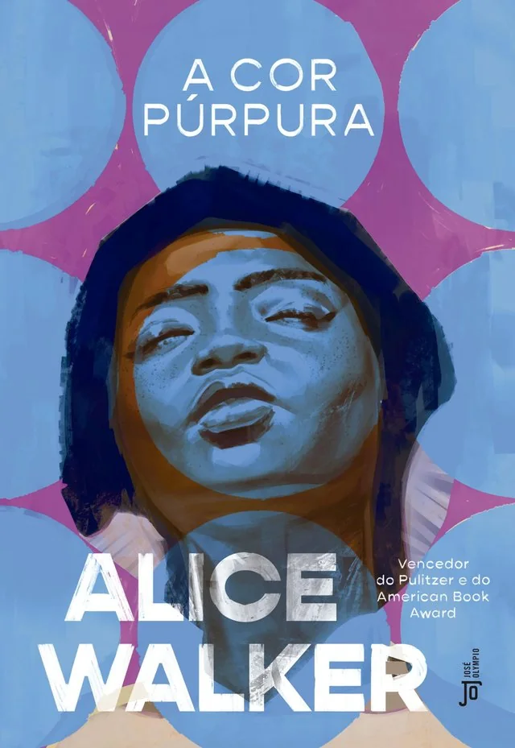

Calibã e a Bruxa
Mulheres, corpo e acumulação primitiva.
Proteção, acolhimento
& segurança
Nenhuma mulher sozinha
diante da violência.
O Alerta Rosa é um aplicativo de proteção às mulheres. Ele nasceu de uma realidade que não dá para ignorar: muitas mulheres vivem situações de assédio, perseguição e violência e, na hora do perigo, não sabem a quem recorrer nem para onde ir.
Por isso reunimos, num só lugar, um pedido de socorro rápido, uma rede de pessoas de confiança e o caminho até os pontos de apoio mais próximos. Tecnologia a serviço da segurança, do acolhimento e da liberdade de ir e vir.
Mulheres, corpo e acumulação primitiva.
Gênero, raça e classe como opressões que se cruzam.

Romance vencedor do Pulitzer sobre violência e libertação.
Diário de uma favelada.
Mulheres que revolucionaram o Brasil.
Como as imagens de beleza são usadas contra as mulheres.
Mitos e histórias do arquétipo da Mulher Selvagem.
Autobiografia sobre racismo, trauma e resistência.
Fatos, mitos e a experiência vivida das mulheres.
Um convite para repensar o que é ser mulher hoje.